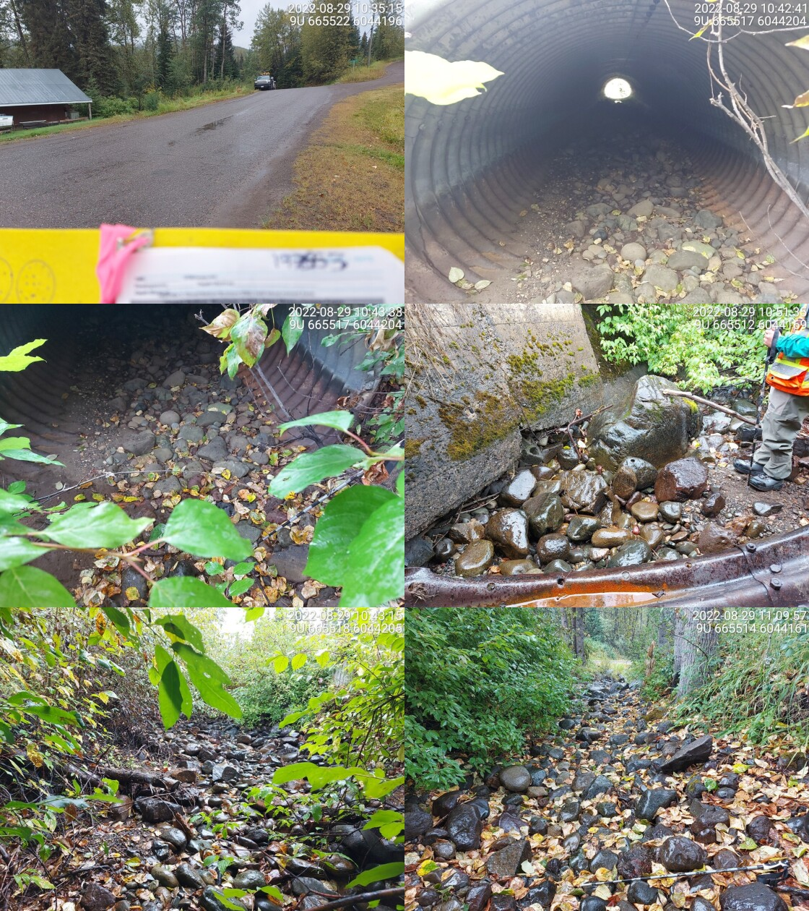

Perow Creek - 197653 - Appendix
Site Location
PSCIS crossing 197653 is located on Perow Creek approximately 10km west of Topley, BC within a small subdivision of residential properties. The site is located on Perow Loop Road, 0.5km upstream from the confluence with Byman Creek and approximately 50m upstream of Highway 16. Byman Creek habitat and road stream crossing structures were assessed in 2020 with background and results presented in Irvine (2021). Three stream crossing structures are located downstream of Perow Loop road and are discussed below. Although modelling indicates seven crossings are located upstream of crossing 197653, review of GIS data indicates six of those crossings are located on small tributary streams over 7km upstream and very unlikely to provide high value habitat. The upstream crossing on the transmission line ~350m from Perow Loop road was assessed and is discussed below. Crossing 197653 is the responsibility of the Ministry of Transportation and Infrastructure.
Background
At crossing 197653, Perow Creek is a fourth order stream with a watershed area upstream of the crossing of approximately 16.4km2. The elevation of the watershed ranges from a maximum of 1412m to 810m near the crossing (Table 5.11). Although chinook, coho and steelhead have been observed downstream in Byman Creek within ~100m of the crossing, at the time of reporting, there was no fisheries information available for the area upstream of crossing 197653 (MoE 2020b; Norris 2020).
fpr::fpr_table_wshd_sum(site_id = my_site) %>%
fpr::fpr_kable(caption_text = paste0('Summary of derived upstream watershed statistics for PSCIS crossing ', my_site, '.'),
footnote_text = 'Elev P60 = Elevation at which 60% of the upstream watershed area is above',
scroll = F)| Site | Area Km | Elev Site | Elev Min | Elev Max | Elev Median | Elev P60 | Aspect |
|---|---|---|---|---|---|---|---|
| 197653 | 16.4 | 649 | 810 | 1412 | 991 | 970 | SSE |
| * Elev P60 = Elevation at which 60% of the upstream watershed area is above |
PSCIS stream crossing 197653 was ranked as a high
priority for follow up by the Canadian Wildlife Federation and a moderate priority for follow up by Irvine (2021) due to significant quantities of habitat
upstream modelled by bcfishpass as likely suitable for salmon rearing. A
total of 5ha
of lake and 12ha of
wetland is modelled upstream and a summary of habitat modelling outputs
is presented in Table 5.12. A map of the
watershed is provided in map attachment
093L.114.
| Habitat | Potential | Remediation Gain | Remediation Gain (%) |
|---|---|---|---|
| ST Network (km) | 34.2 | 0.3 | 1 |
| ST Lake Reservoir (ha) | 4.6 | 0.0 | 0 |
| ST Wetland (ha) | 12.2 | 0.0 | 0 |
| ST Slopeclass03 Waterbodies (km) | 1.8 | 0.0 | 0 |
| ST Slopeclass03 (km) | 6.6 | 0.3 | 5 |
| ST Slopeclass05 (km) | 3.8 | 0.0 | 0 |
| ST Slopeclass08 (km) | 15.1 | 0.0 | 0 |
| ST Spawning (km) | 0.0 | 0.0 | – |
| ST Rearing (km) | 7.4 | 0.3 | 4 |
| CH Spawning (km) | 0.0 | 0.0 | – |
| CH Rearing (km) | 0.0 | 0.0 | – |
| CO Spawning (km) | 0.0 | 0.0 | – |
| CO Rearing (km) | 0.0 | 0.0 | – |
| CO Rearing (ha) | – | 0.0 | – |
| SK Spawning (km) | 0.0 | 0.0 | – |
| SK Rearing (km) | 0.0 | 0.0 | – |
| SK Rearing (ha) | – | 0.0 | – |
| All Spawning (km) | 19.1 | 0.3 | 2 |
| All Rearing (km) | 7.4 | 0.3 | 4 |
| All Spawning Rearing (km) | 19.1 | 0.3 | 2 |
| * Model data is preliminary and subject to adjustments. |
5.2 Climate Change Risk Assessment
Preliminary climate change risk assessment data is presented in Tables 5.13 - 5.14.
| Condition and Climate Risk | Rank | Priority | Rank |
|---|---|---|---|
| Erosion (scale 1 low - 5 high) | 1 | Traffic Volume 1 (low) 5 (medium) 10 (high) | 10 |
| Embankment fill issues 1 (low) 2 (medium) 3 (high) | 1 | Community Access - Scale - 1 (high - multiple road access) 5 (medium - some road access) 10 (low - one road access) | 5 |
| Blockage Issues 1 (0-30%) 2 (>30-75%) 3 (>75%) | 1 | Cost (scale: 1 high - 10 low) | 3 |
| Condition Rank = embankment + blockage + erosion | 3 | Constructibility (scale: 1 difficult -10 easy) | 3 |
| Likelihood Flood Event Affecting Culvert (scale 1 low - 5 high) | 3 | Environmental Impacts (scale: 1 high -10 low) | 8 |
| Consequence Flood Event Affecting Culvert (scale 1 low - 5 high) | 3 | Fish Bearing 10 (Yes) 0 (No) - see maps for fish points | 10 |
| Climate Change Flood Risk (likelihood x consequence) 1-6 (low) 6-12 (medium) 10-25 (high) | 9 | Priority Rank = traffic volume + community access + cost + constructability + fish bearing + environmental impacts | 39 |
| Vulnerability Rank = Condition Rank + Climate Rank | 12 | Overall Rank = Vulnerability Rank + Priority Rank | 51 |
| Category | Comments |
|---|---|
| Condition | The culvert is in decent shape with some minor metal damage. |
| Climate | The watershed is relatively large and the culvert is embedded so there is some risk of blockage before large release of flows upstream, possibly related to a beaver dam. |
| Priority | The crossing is on small low volume residential road with easy and fast detour during construction. Blow out affecting highway downstream would be of high consequence. Railway and one or two residential properties are located downstream. |
Stream Characteristics at Crossing
At the time of the survey, PSCIS crossing 197653 was un-embedded, non-backwatered and ranked as a barrier to upstream fish passage according to the provincial protocol (MoE 2011b) (Table 5.15). The culvert outlet drop measured at 0.3m high. There were large chunks of concrete just downstream of the outlet armouring the banks. There was no water at the time of survey.
| Location and Stream Data |
|
Crossing Characteristics | – |
|---|---|---|---|
| Date | 2022-08-29 | Crossing Sub Type | Round Culvert |
| PSCIS ID | 197653 | Diameter (m) | 2.3 |
| External ID | – | Length (m) | 28 |
| Crew | MW, TP | Embedded | No |
| UTM Zone | 9 | Depth Embedded (m) | – |
| Easting | 665520 | Resemble Channel | No |
| Northing | 6044200 | Backwatered | No |
| Stream | Perow Creek | Percent Backwatered | – |
| Road | Perow Loop Road | Fill Depth (m) | 0.5 |
| Road Tenure | MoTi | Outlet Drop (m) | 0.3 |
| Channel Width (m) | 4.3 | Outlet Pool Depth (m) | 0 |
| Stream Slope (%) | 4 | Inlet Drop | No |
| Beaver Activity | No | Slope (%) | 1.5 |
| Habitat Value | Low | Valley Fill | Deep Fill |
| Final score | 34 | Barrier Result | Barrier |
| Fix type | Replace with New Open Bottom Structure | Fix Span / Diameter | 10 |
| Photos: From top left clockwise: Road/Site Card, Barrel, Outlet, Downstream, Upstream, Inlet. | |||
| Comments: Stream is dry. Private yards u/s and d/s. Riprap and cement in channel. 10:48 |
Stream Characteristics Downstream
The stream was surveyed downstream from crossing 197653 for 100m to the culvert (PSCIS 197657) located on Highway 16, then an additional 25m downstream from the highway. The entire area assessed downstream of the crossing was dry at the time of the survey (Figures 5.8 - 5.9). Total cover amount was rated as moderate with boulders dominant. Cover was also present as overhanging vegetation. The average channel width was 4.3m, and the average gradient was 2%. The dominant substrate was boulders with cobbles sub-dominant. PSCIS crossing 197657 on the highway, approximately 50m downstream from crossing 197653 was reassessed and ranked as passable as it was low gradient, fully embedded and with no outlet drop. It appeared passable to all species and life stages at the time of assessment (Table 5.16). This crossing was previously assessed in 2020 by Irvine (2021), but it was mistakenly input as modelled crossing ID 1800064, when it should have been 1800067. The stream from Perow Loop Road to the highway flowed through private property and appeared to be channelized and confined with concrete slabs used as stream bank armoring just downstream of the outlet. Downstream of the highway crossing two bridges are documented in the PSCIS database (197660 and 197659). Although habitat downstream had limited complexity resulting from impacts related to the adjacent road infrastructure and residential properties, the habitat was rated as medium value as it was considered an important migration corridor.
fpr::fpr_table_cv_summary_memo(dat = pscis_reassessments, site = my_site2, site_photo_id = my_site2)| Location and Stream Data |
|
Crossing Characteristics | – |
|---|---|---|---|
| Date | 2022-08-29 | Crossing Sub Type | Oval Culvert |
| PSCIS ID | 197657 | Diameter (m) | 2.3 |
| External ID | – | Length (m) | 18 |
| Crew | AI, TP | Embedded | Yes |
| UTM Zone | 9 | Depth Embedded (m) | 1 |
| Easting | 665525.1 | Resemble Channel | Yes |
| Northing | 6044126 | Backwatered | No |
| Stream | Perow Creek | Percent Backwatered | – |
| Road | Highway 16 | Fill Depth (m) | 0.5 |
| Road Tenure | – | Outlet Drop (m) | 0 |
| Channel Width (m) | 4.6 | Outlet Pool Depth (m) | 0 |
| Stream Slope (%) | 3 | Inlet Drop | No |
| Beaver Activity | No | Slope (%) | 1.5 |
| Habitat Value | Medium | Valley Fill | Deep Fill |
| Final score | 14 | Barrier Result | Passable |
| Fix type | – | Fix Span / Diameter | – |
Photos: From top left clockwise: Road/Site Card, Barrel, Outlet, Downstream, Upstream, Inlet.
|
|||
| Comments: Stream was dry at the time of survey but had water last year during extremely dry ear. Culvert appears passable for all life stages. There is a private land residential development impacting the stream. The channel is constricted and has large chunks of riprap throughout. 10:45 |
Stream Characteristics Upstream
The stream was surveyed upstream from crossing 197653 for 500m (Figures 5.10 - 5.13). Two sections of stream upstream of the crossing were assessed. As residential buildings and yards were situated immediately adjacent to the stream upstream of the crossing, the stream was accessed from a ford located on the transmission line ~325m upstream of Perow Loop Road. The first section surveyed included ~350m of channel upstream of the ford and was dewatered at the time of survey. The dominant substrate was cobbles with gravels sub-dominant.Total cover amount was rated as moderate with overhanging vegetation dominant. Cover was also present as small woody debris.The average channel width was 3.2m, the average wetted width was 1.9m, and the average gradient was 3%.
Habitat quality improved significantly within the second section of stream surveyed where flows were significant. Water temperature was 13\(^\circ\)C, pH was 8.1 and conductivity was 230uS/cm. Total cover amount was rated as moderate with boulders dominant. Cover was also present as small woody debris, large woody debris, undercut banks, deep pools, and overhanging vegetation.The dominant substrate was cobbles with gravels sub-dominant.The average channel width was 4.7m, the average wetted width was 2.4m, and the average gradient was 3.7%. There were gravels present throughout the area surveyed that were suitable for resident and anadromous salmonid spawning. Infrequent deep pools for salmonids rearing and overwintering were also present. Overall, the habitat was rated as medium value as an important migration corridor containing pockets of habitat suitable for spawning with moderate potential for juvenile salmonid rearing.
fpr::fpr_table_cv_summary_memo(dat = pscis_phase1, site = 1801071, site_photo_id = 1801071, col_filter = my_crossing_reference)| Location and Stream Data |
|
Crossing Characteristics | – |
|---|---|---|---|
| Date | 2022-08-29 | Crossing Sub Type | Ford |
| PSCIS ID | 198109 | Diameter (m) | – |
| External ID | 1801071 | Length (m) | – |
| Crew | MW, TP | Embedded | – |
| UTM Zone | 9 | Depth Embedded (m) | – |
| Easting | 665432 | Resemble Channel | – |
| Northing | 6044495 | Backwatered | – |
| Stream | Perow Creek | Percent Backwatered | – |
| Road | Transmission Line | Fill Depth (m) | – |
| Road Tenure | Hydro | Outlet Drop (m) | – |
| Channel Width (m) | – | Outlet Pool Depth (m) | – |
| Stream Slope (%) | – | Inlet Drop | – |
| Beaver Activity | No | Slope (%) | – |
| Habitat Value | – | Valley Fill | – |
| Final score | 0 | Barrier Result | Unknown |
| Fix type | – | Fix Span / Diameter | – |
Photos: From top left clockwise: Road/Site Card, Barrel, Outlet, Downstream, Upstream, Inlet.
|
|||
| Comments: No crossing. Transmission line. 12:49 |
Structure Remediation and Cost Estimate
Should restoration/maintenance activities proceed, replacement of PSCIS crossing 197653 with a bridge (10m span) is recommended. The cost of the work is estimated at $400,000 for a cost benefit of 18475 linear m/$1000 and 39721.2 m2/$1000.
Conclusion
There was 7.4km of habitat modelled upstream of crossing 197653 with areas surveyed rated as medium value for salmonid rearing and spawning. Crossing 197653 was ranked as a moderate priority for proceeding to design for replacement. Perow Creek near crossing 197653 has been negatively impacted by adjacent land use related to landscaping of private residences. Impacts include riparian vegetation removal, channelization, and streambank armouring. As there is no historic information on fish presence upstream of the highway fish sampling is recommended. Regardless of whether structure replacement proceeds, local residents should be engaged to explore options for riparian and channel rehabilitation on private lands within the lower reaches.
tab_hab_summary %>%
filter(Site == my_site) %>%
# select(-Site) %>%
fpr::fpr_kable(caption_text = paste0('Summary of habitat details for PSCIS crossing ', my_site, '.'),
scroll = F) | Site | Location | Length Surveyed (m) | Channel Width (m) | Wetted Width (m) | Pool Depth (m) | Gradient (%) | Total Cover | Habitat Value |
|---|---|---|---|---|---|---|---|---|
| 197653 | Downstream | 100 | 4.3 | – | – | 2.0 | moderate | medium |
| 197653 | Upstream | 500 | 3.2 | 1.9 | 0.4 | 3.0 | moderate | medium |
| 197653 | Upstream2 | 150 | 4.7 | 2.4 | 0.6 | 3.7 | moderate | medium |
my_photo1 = fpr::fpr_photo_pull_by_str(str_to_pull = '_d1_')
my_caption1 = paste0('Habitat downstream of PSCIS crossing ', my_site, '.')
# fpr::fpr_photo_flip(site_id = 1802488, str_to_pull = '6257')Figure 5.8: Habitat downstream of PSCIS crossing 197653.
my_photo2 = fpr::fpr_photo_pull_by_str(str_to_pull = '_d2_')
my_caption2 = paste0('Habitat downstream of PSCIS crossing ', my_site, '.')Figure 5.9: Habitat downstream of PSCIS crossing 197653.
my_caption <- paste0('Left: ', my_caption1, ' Right: ', my_caption2)
knitr::include_graphics(my_photo1)
knitr::include_graphics("fig/pixel.png")
knitr::include_graphics(my_photo2)my_photo1 = fpr::fpr_photo_pull_by_str(str_to_pull = '_u1_')
my_caption1 = paste0('Habitat upstream of PSCIS crossing ', my_site, '.')Figure 5.10: Habitat upstream of PSCIS crossing 197653.
my_photo2 = fpr::fpr_photo_pull_by_str(str_to_pull = '_u2_')
my_caption2 = paste0('Habitat upstream of PSCIS crossing ', my_site, '.')Figure 5.11: Habitat upstream of PSCIS crossing 197653.
my_caption <- paste0('Left: ', my_caption1, ' Right: ', my_caption2)
knitr::include_graphics(my_photo1)
knitr::include_graphics("fig/pixel.png")
knitr::include_graphics(my_photo2)my_photo1 = fpr::fpr_photo_pull_by_str(str_to_pull = '_u3_')
my_caption1 = paste0('Habitat upstream of PSCIS crossing ', my_site, '.')Figure 5.12: Habitat upstream of PSCIS crossing 197653.
my_photo2 = fpr::fpr_photo_pull_by_str(str_to_pull = '_u4_')
my_caption2 = paste0('Habitat upstream of PSCIS crossing ', my_site, '.')Figure 5.13: Habitat upstream of PSCIS crossing 197653.
my_caption <- paste0('Left: ', my_caption1, ' Right: ', my_caption2)
knitr::include_graphics(my_photo1)
knitr::include_graphics("fig/pixel.png")
knitr::include_graphics(my_photo2)